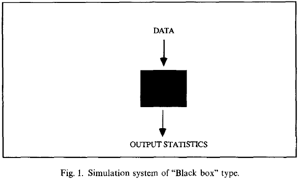
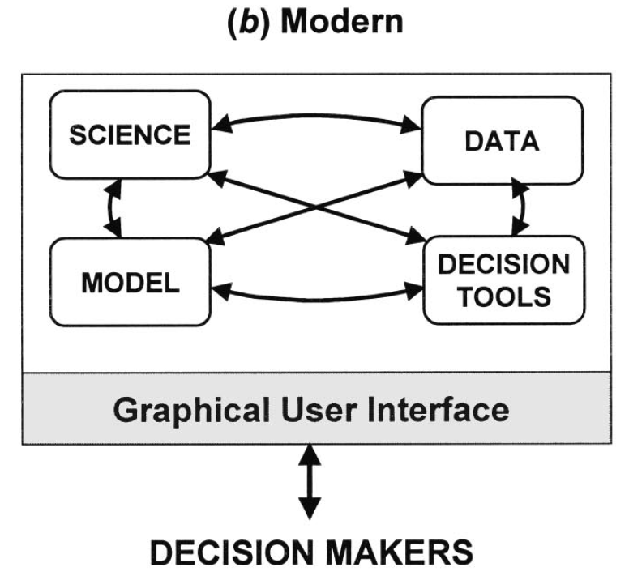

Web Applications for Interactive Environmental Modeling
PhD Defense
Dept. Civil & Environmental Engineering
Tufts University
March 28, 2014
Presentation Tutorial
This presentation was made with the reveal.js HTML/JavaScript presentation framework.
If you are unfamiliar with this format, click here to walk through the offical tutorial.
In order to navigate, note the following:
- Unlike Powerpoint, slides are arranged in two-dimensions
- The 'compass' in the lower-right corner indicates which directions you can move (in this case, left/right/down)
- Use the arrow keys to change slides
- If you get lost, press the Esc key to see all the slides
- Press the down arrow key to see the slide below (do this now)
Good!
Each section of the presentation is a column of slides
So always move down before moving right
When you get to the bottom, then go right to go to the next section
Now press the right arrow to begin the presentation
Overview
- Problems
- Methodology
- Project 1: Water Quality Model
- Project 2: Watershed Model
- Project 3: Living Model
- Discussion & Conclusions
The Problems
- Model Understanding
- Model Accessibility
- Model Life Cycle
Model Understanding
Kuljis (1994). User interfaces and discrete event simulation models
Model Accessibility
Model Accessibility
Model Life Cycle
USEPA (2008). Handbook for Developing Watershed Plans to Restore and Protect Our Waters
Methodology
Client-side web applications built using web standards to create interactive and visual model interfaces
Web Communications
Web-based Simulation Architectures
Byrne et al. (2010) A review of Web-based simulation and supporting tools
Project 1
Web-based Interactive River Model (WIRM)
Goals
- Demonstrate client-side approach to simulation and visualization using web standards (HTML, JavaScript)
- Store model parameters on server to promote model sharing and collaboration
Walker, J. D., and Chapra, S. C. (2014). A client-side web application for interactive environmental simulation modeling. Environmental Modelling & Software, 55, 49-60
DEMO
Conclusions
- Client-side approach not only possible, but is surprisingly fast
- Strong potential for interactive interfaces
- Raises new questions:
- Are interactive interfaces useful? How?
- What else can we do? Add data? Calibration?
Project 2
Web-based Interactive Watershed Model (WIWM)
Goals
- Use interactive visualizations to understand model theory
- Incorporate input and observation data for dynamic simulations
- Interactive interfaces for model calibration
Cognitive Perspective
Can interactive visualizations help us understand how models work? If so, how?
- Mental model formation
- Amplify cognition
Mental Models
"Mental models are the mechanisms whereby humans are able to generate descriptions of system purpose and form, explanations of system functioning and observed system states, and predictions of future system states."
- Rouse & Morris (1986)
Mental Models
Amplify Cognition

Card et al. (1999). Information Visualization: Using Vision to Think
abcd Water Balance Model
Developed by Thomas (1981)
Mass Balance
Mass Balance Diagram
$$ Storage_{t-1} + \sum{Inflow_t} = Storage_t + \sum{Outflow_t} $$
Soil Moisture Diagram
$$ Soil_{t-1} + Precip_t = Soil_t + ET_t + Runoff_t + Recharge_t $$
Soil Moisture Diagram
$$ Soil_{t-1} + Precip_t = Soil_t + ET_t + Runoff_t + Recharge_t $$
DEMO
Conclusions
- Interactive visualizations are a powerful way of understanding model theory and behavior
- Client-side applications can maintain application state and perform data input/output using text files
- Next question:
- Can we couple a model to input data sources?
Project 3
Living Model
Goals
- Couple client-side application to server-side data management system
- Interface to inspect and manage the data
- Interface to explore and refine the model
Architecture
DEMO
Conclusions
- Living model provides an interactive interface for updating and evaluating model simulations
- Important to provide interfaces for supervising the process
- Potential to fundamentally change how we use models
- Future Research
- Data processing algorithms (cleaning, filling, ...)
- Additional data management interfaces
Discussion
Limitations
- Not all models will run in the browser
- Performance limitations
- Need more research on the "science of interaction"
Future Research
- Try different models
- Geospatial visualizations
- Data exploration and analysis
- Decision support systems
Conclusions
- Standard web languages provide the performance and features necessary to support client-side simulation modeling
- Client-side applications support highly interactive modeling interfaces
- Visual interaction improves understanding of model theory and behavior
- Use web services to couple models to data sources and improve the model life cycle
- Lots more to explore...
Acknowledgements
- Advisor
Dr. Steven Chapra (Tufts) - Committee
Dr. Alva Couch (Tufts)
Dr. Richard Vogel (Tufts)
Dr. Peter Shanahan (MIT) - Friends & Family:
Dr. Elizabeth Halliday
Dr. William Walker & Mrs. Martha Walker
All My Tufts Friends & Colleagues